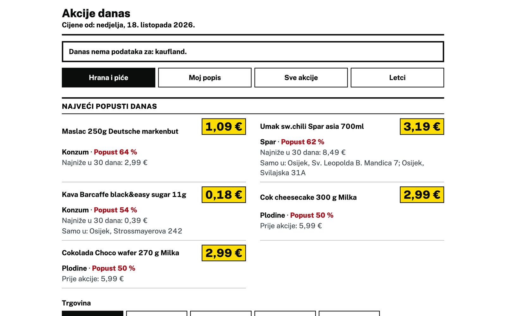
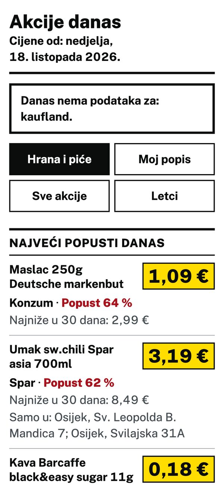

akcije hrastin
Die Supermarktaktionen rund um Hrastin auf einer Seite, für meinen Vater.
Mein Vater sucht jeden Tag die Angebote von Konzum, Lidl, Kaufland, Plodine und Spar zusammen. Die Seite holt sie zweimal am Tag aus den Preislisten, die die Ketten in Kroatien veröffentlichen müssen, und zeigt nur die Filialen in Osijek und Čepin. Sie ist auf Kroatisch, mit großer Schrift und einer Merkliste für seine Produkte. In der Suche stehen auch alle übrigen Preise, rund 92.000 Artikel.
Seit 2025 müssen kroatische Supermärkte ihre Preise jeden Tag als offene Liste veröffentlichen. Die Seite liest diese Listen direkt und muss keine Prospekte abtippen. Ein gelbes Preisschild gibt es nur, wenn der Preis wirklich gesunken ist, und zu jedem Angebot steht der niedrigste Preis der letzten 30 Tage. Unter „Letci“ liegen zusätzlich die aktuellen Wochenprospekte jeder Kette.
läuft · Web
Seite öffnen
